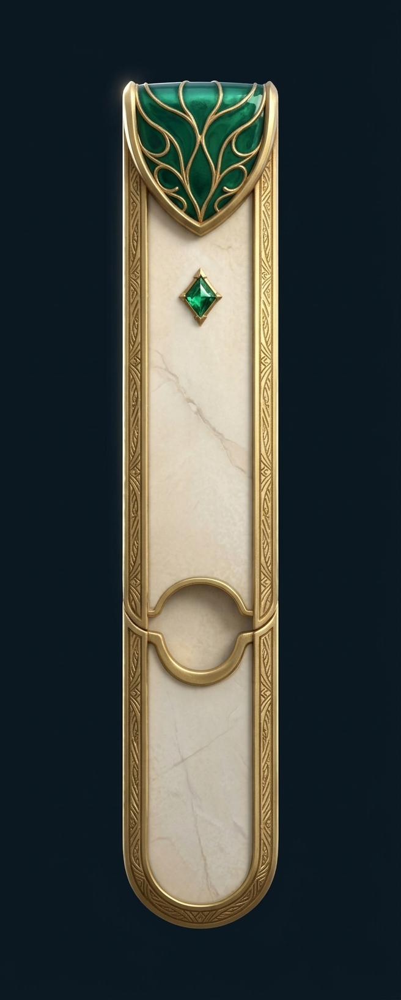
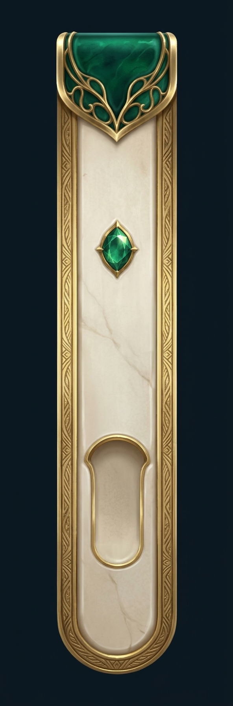
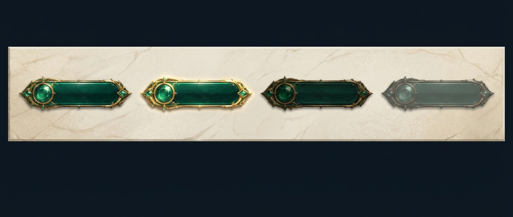
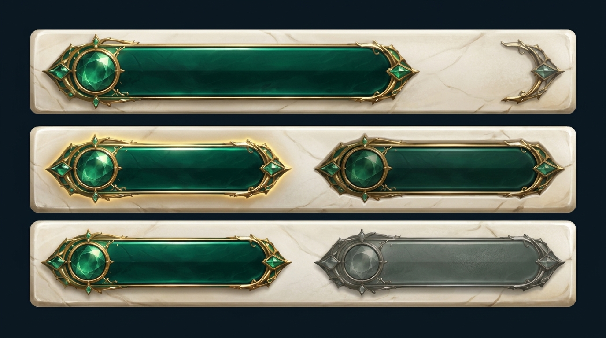
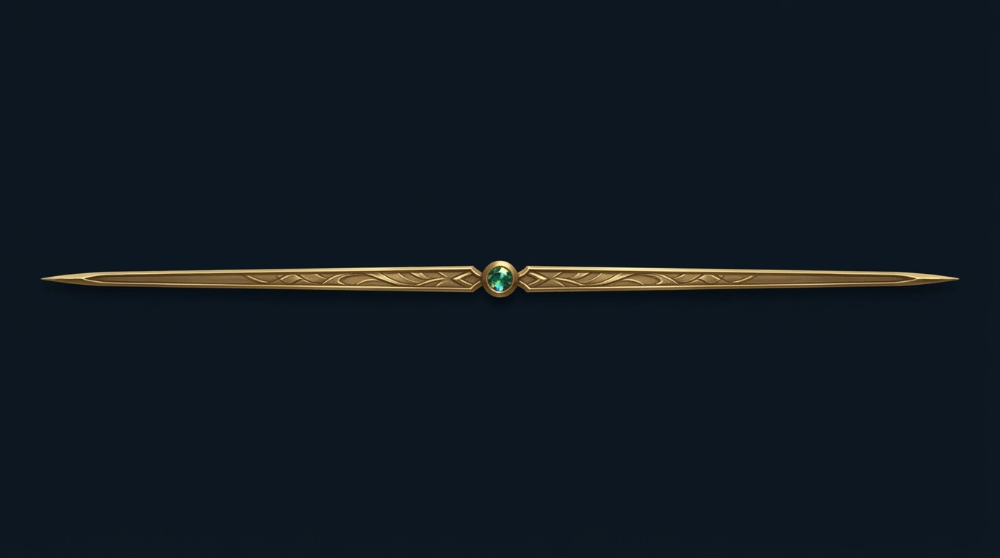
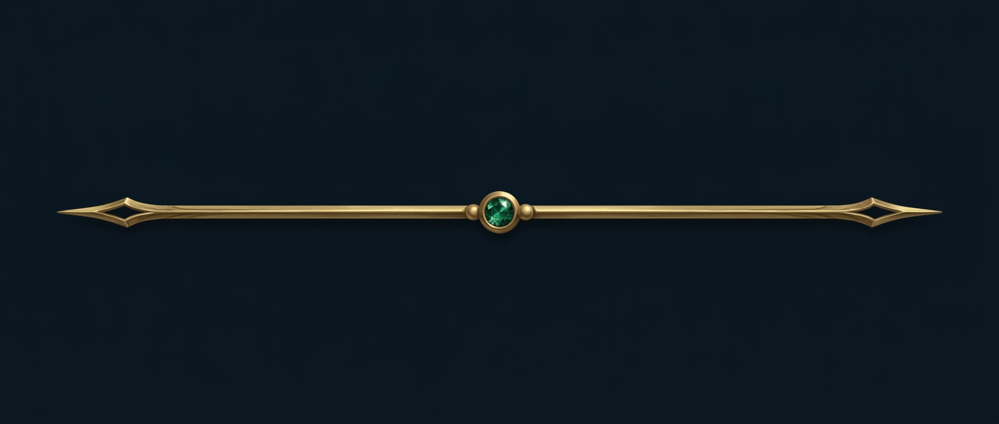
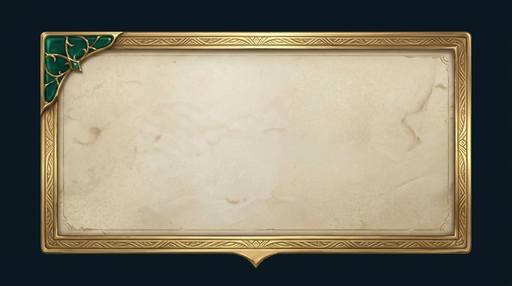
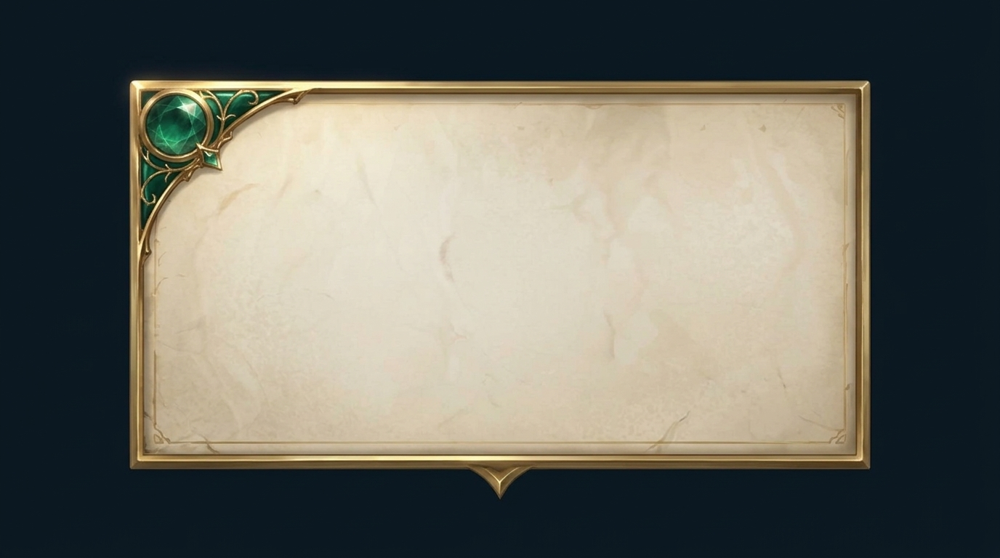

8 immagini · budget 65→73/170 · refs: pf-3 frame + material-strip · kill list rispettata (no testo/viola/marrone). Scegli la baseline per pezzo: 1 o 2, oppure «rigenera X». ← composizioni







